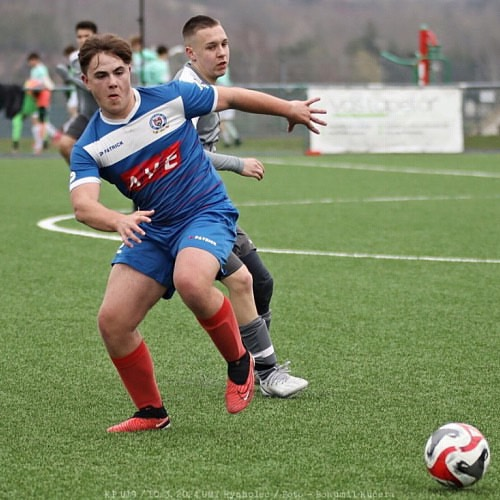
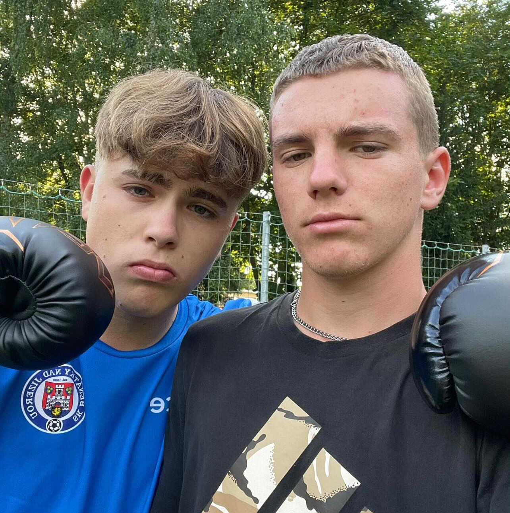

Fotbal hraju od svých 3 let za klub který nese název SK Benátky nad Jizerou po městě ve kterém bydlÃm. Jako jeden z mých úspěchů bych určitě vypÃchnul zÃskánà trofeje za nejlepÅ¡Ãho střelce v mojà věkové kategorii, bylo mi přibližně 10 let a za sezónu jsem vstřelil 124 branek. Podobný úspěch jsem si připsal i ve svých 14 letech kde jsem v krajské soutěži vstřelil 24 branek a tÃm jsem se stal jednÃm z nejlepÅ¡Ãch střelců našeho klubu v kategorii starÅ¡Ãch žáku U17. Momentálně hraji za StarÅ¡Ã dorost i když věkově spadám do mladÅ¡Ãho. Fotbal mi do života dal určitě dost krásných zážitků a vzpomÃnek, ale už mě nenapňuje jako dÅ™Ãv a tak mám v plánu po této sezóně skončit.
Box mě vždycky lákal a konečně jsem se k němu dostal, je to sport co mě naplňuje a držà mě při životě. Je to sice velice náročné ale to je důvod proč jsem s nÃm začal. Trénuji v klbu zvaný Bulldog Gym . Na boxu miluju to jak je to pokorný sport a je skoro nemožné tam najÃt nějakého frajÃrka který by vám to kazil a znechutil. Trenéři jsou profesionálové a každý trénink má něco do sebe. Potom co s konÄÃm s fotbalem mám v plánu se boxu věnovat na 100%. Jediný problém je u rodičů, těm se moc ta myšlenka že bych přestal s fotbalem nelÃbÃ.
